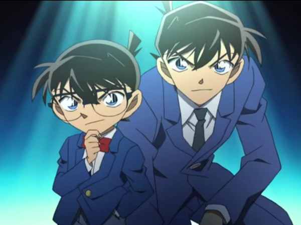
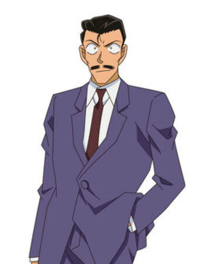

名偵探柯南
外表看似小孩 智慧卻過於常人的名偵探柯南
故事大綱
主角工藤新一原本是一位經常幫助警方破案的17歲高中生偵探；某一天和青梅竹馬毛利蘭在熱帶樂園遊玩時目擊黑暗組織的可疑行動
，獨自前往交易現場時卻遭另一名同夥從背後偷襲擊昏，並灌下代號為「APTX-4869」的神秘藥物，導致身體變小。之後被阿笠博士發現，並在阿笠博士的建議下，化名為江戶川柯南，
寄住在毛利小五郎家，並秘密進行偵探的工作以及調查黑暗組織，在這故事中交織著愛情、友情、犯罪、背叛、復仇等各種要素於其中。
角色介紹

江戶川柯南(工藤新一)
原本是高中生偵探，但被灌下毒藥成為小孩，居住在毛利小五郎的家，在高中時期與小蘭是男女朋友。
毛利蘭(小蘭)
在高中時期與新一是男女朋友，空手道非常厲害。

毛利小五郎
一子被麻醉槍打，時常被柯南當替身。
阿笠博士
時常幫柯南研發用品，有時也是柯南的好幫手。
少年偵探團
小島元太同學發起並自任團長，但實際上的領導人是江戶川柯南，主要成員還有吉田步美、灰原哀、圓谷光彥。
作者介紹
主題曲